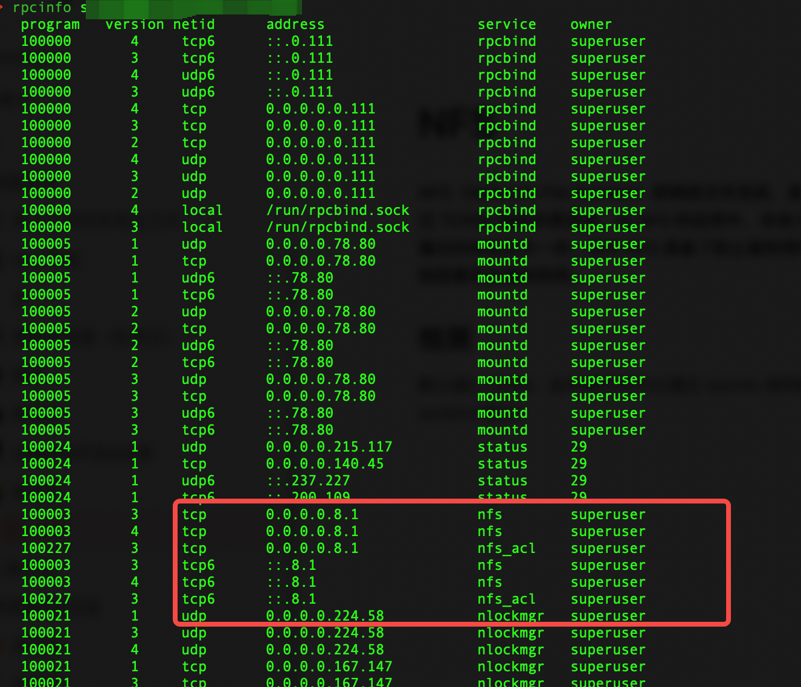

NFS
目录
NFS（Network File System）即网络文件系统，是FreeBSD支持的文件系统中的一种，它允许网络中的计算机之间通过TCP/IP网络共享资源。在NFS的应用中，本地NFS的客户端应用可以透明地读写位于远端NFS服务器上的文件，就像访问本地文件一样。如今NFS具备了防止被利用导出文件夹的功能，但遗留系统中的NFS服务配置不当，则仍可能遭到恶意攻击者的利用。
检测
检测服务是否存在
默认端口2049，此外我们也可以通过rpcinfo来判断目标主机是否开启NFS服务（使用rpcinfo需要目标机器开启111 rpcbind端口）

msf
auxiliary/scanner/nfs/nfsmount
msf可以批量跑还是可以。
set rhosts file:/root/url.txt
showmount
showmount IP // 连接的主机
showmount -d IP // 目录
showmount -a IP // 挂载点
NFSSHELL
推荐linux下使用
https://github.com/NetDirect/nfsshell
apt-get install libreadline-dev libncurses5-dev
make
gcc -g -o nfsshell mount_clnt.o mount_xdr.o nfs_prot_clnt.o nfs_prot_xdr.o nfsshell.o -L/usr/local/lib -lreadline -lhistory -lncurses
./nfsshell
nfs> host IP // 连接NFS服务
nfs> export // 导出NFS列表
利用
如果有共享目录，就直接挂载到本地目录
mkdir /temp/
mount -t nfs 192.168.1.172:/ /temp -o nolock